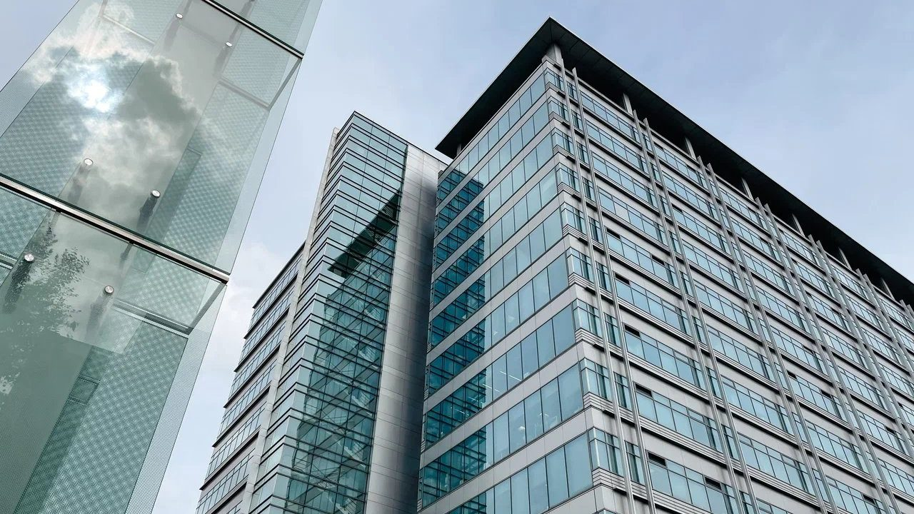
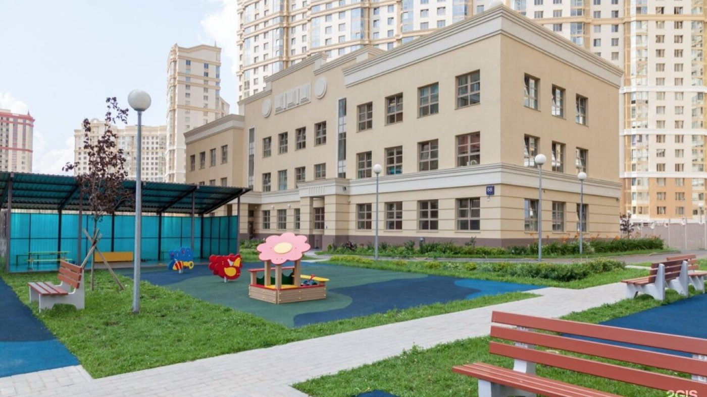
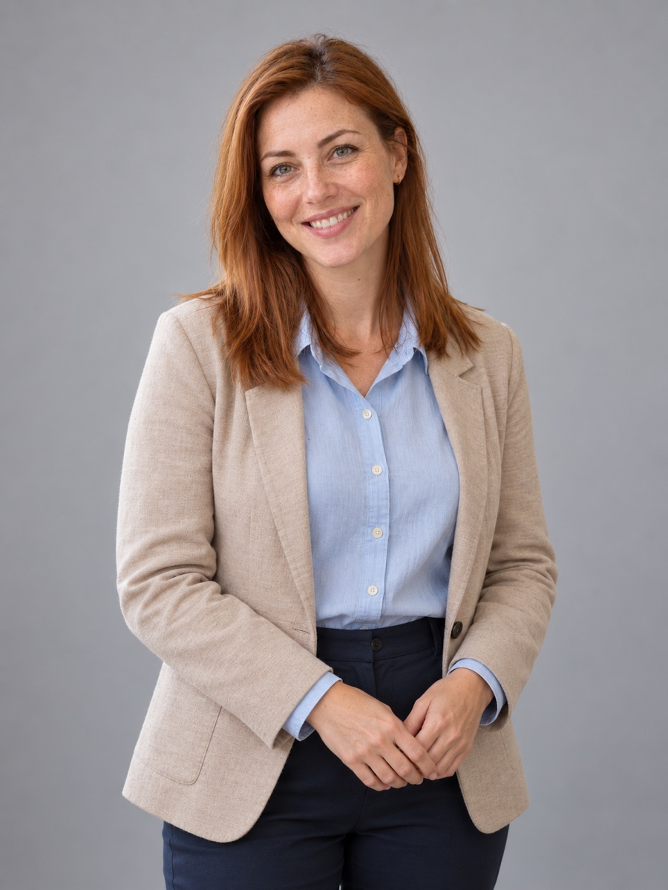

Сколько стоит частная школа в Москве и за что вы платите
Из чего складывается цена частной школы в Москве: диапазоны по сегментам, что входит в стоимость, скрытые расходы, как сравнивать школы по деньгам.

Учитель математики, руководитель математического клуба.
Со школьных лет увлекался шахматами и задачами с неожиданным решением. Преподавание выбрал во время студенческих занятий с подростками: ему оказалось интересно разбираться, почему одна и та же идея понятна одному ученику и вызывает затруднения у другого.
Правильный ответ радует. Но гораздо интереснее понять, как ты до него дошёлСтатьи педагога ↓
2001–2006 годы, математический факультет, специальность «Математика».
Преподаёт с 2006 года. Работал с общеобразовательными и профильными классами, организовывал математические кружки. Постепенно сосредоточился на развитии рассуждения и работе с учениками, которые считают себя «неспособными к математике».
Математика в 5–6 классах, алгебра и геометрия в 7–11 классах. Учит строить рассуждение, проверять условия, оценивать правдоподобие ответа и ясно записывать решение.
В программе – логические задачи, вероятности, игры и практические расчёты.
Ошибка становится полезной, когда мы можем показать, на каком шаге свернули

Из чего складывается цена частной школы в Москве: диапазоны по сегментам, что входит в стоимость, скрытые расходы, как сравнивать школы по деньгам.

Что меняет размер класса: время учителя на ребёнка, темп, вопросы, дисциплина, дружба. Где маленький класс не помогает и как проверить наполняемость.

